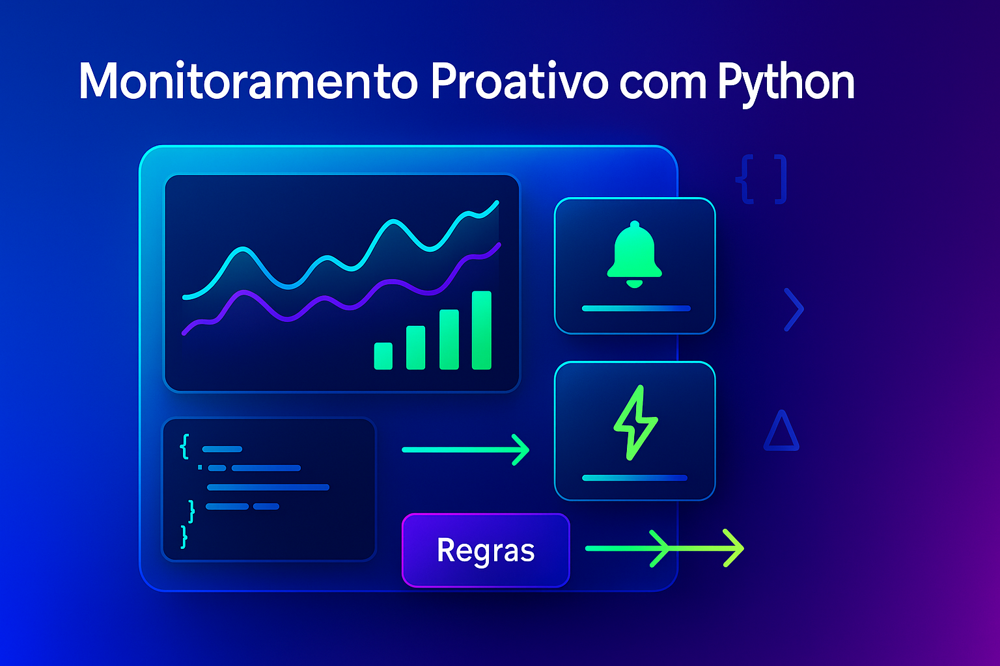

Monitoramento Proativo com Python: Logs Inteligentes e Alertas Automatizados
Voc� j� esbarrou na sigla MTTR? Se ainda n�o, vale 2 minutos para entender por que ela virou o indicador n� 1 em times de opera��o e produto. No fim deste artigo deixei um adendo simples sobre MTTR — pode conferir depois ou pular direto agora.
O ponto crucial �: reduzir o MTTR exige n�o esperar o usu�rio reclamar. — aqui que entra o monitoramento proativo: logs inteligentes que d�o contexto e alertas automatizados que acionam a equipe na hora certa.
Neste guia colaborativo, mostramos como implementar isso em Python com padr�es prontos para produ��o: logs JSON estruturados, enriquecimento de contexto, rota��o/reten��o e um monitor simples com alerta via Slack.
Por que proativo?
- Detec��o precoce de anomalias evita efeito cascata.
- Visibilidade sobre causa raiz com correla��o de eventos.
- Tempo de resposta menor (MTTR mais baixo) gra�as a alertas contextuais e acion�veis.
Pilares e escopo
Observabilidade combina logs, m�tricas e traces. Aqui focamos em logs como base para alertas eficazes, sem lock-in de ferramenta.
Logs Inteligentes (JSON + contexto)
Padr�es recomendados:
- JSON estruturado para parse/consulta.
- Chaves padr�o: timestamp, level, message, service, env, trace_id, user_id.
- Sem PII: evite dados sens�veis; use hash/masking.
- Rota��o para evitar disco cheio.
Setup r�pido (logging JSON + rota��o)
import json, logging, sys
from logging.handlers import RotatingFileHandler
class JsonFormatter(logging.Formatter):
def format(self, record):
base = {
"timestamp": self.formatTime(record, "%Y-%m-%dT%H:%M:%S%z"),
"level": record.levelname,
"message": record.getMessage(),
"logger": record.name,
"service": getattr(record, "service", "app"),
"env": getattr(record, "env", "prod"),
"trace_id": getattr(record, "trace_id", None),
"user_id": getattr(record, "user_id", None),
}
return json.dumps({k: v for k, v in base.items() if v is not None})
def get_logger(name: str = "app") -> logging.Logger:
logger = logging.getLogger(name)
logger.setLevel(logging.INFO)
if logger.handlers:
return logger # evita handlers duplicados
fmt = JsonFormatter()
console = logging.StreamHandler(sys.stdout)
console.setFormatter(fmt)
file_handler = RotatingFileHandler("logs/app.log", maxBytes=2_000_000, backupCount=5)
file_handler.setFormatter(fmt)
logger.addHandler(console)
logger.addHandler(file_handler)
return logger
log = get_logger("orders")
log = logging.LoggerAdapter(log, {"service": "orders", "env": "prod"})
log.info("service_started", extra={"trace_id": "abc123"})Enriquecimento de contexto
import logging
class ContextFilter(logging.Filter):
def __init__(self, **base):
super().__init__()
self.base = base
def filter(self, record):
for k, v in self.base.items():
setattr(record, k, v)
return True
logger = get_logger("payments")
logger.addFilter(ContextFilter(service="payments", env="prod"))
logger.info("payment_approved", extra={"trace_id": "t-991", "user_id": "u-42", "amount": 129.90})Alertas Automatizados (práticos e acion�veis)
Boas pr�ticas:
- Thresholds e janelas de tempo (ex.: 5 erros 500 em 1 min).
- Debounce e agrupamento para evitar tempestade de alertas.
- Contexto no alerta (servi�o, amostras de eventos, links �teis).
- Canais: Slack/Teams, e-mail, webhook, PagerDuty.
Exemplo: alerta simples via Slack
import os, json, time, logging, requests
from collections import deque
SLACK_WEBHOOK = os.getenv("SLACK_WEBHOOK_URL")
LOGFILE = "logs/app.log"
WINDOW_SEC = 60
THRESHOLD = 5
def send_slack(text: str):
if not SLACK_WEBHOOK:
return
requests.post(SLACK_WEBHOOK, json={"text": text}, timeout=5)
def tail_errors(path: str):
with open(path, "r", encoding="utf-8") as f:
f.seek(0, 2)
while True:
line = f.readline()
if not line:
time.sleep(0.5); continue
try:
evt = json.loads(line)
if evt.get("level") in {"ERROR", "CRITICAL"}:
yield evt
except Exception:
continue
def monitor():
window = deque()
for evt in tail_errors(LOGFILE):
now = time.time()
window.append(now)
while window and now - window[0] > WINDOW_SEC:
window.popleft()
if len(window) >= THRESHOLD:
sample = evt.get("message")
send_slack(f"Alerta: {len(window)} erros em {WINDOW_SEC}s no servi�o {evt.get('service')}. Ex.: {sample}")
window.clear()
# monitor()Checklists r�pidas
- [ ] Log em JSON com chaves padr�o.
- [ ] Rota��o e reten��o configuradas.
- [ ] Enriquecimento de contexto (service, env, trace_id).
- [ ] Regras de alerta com debounce e amostras.
- [ ] Playbooks de resposta anexados a cada alerta.
Privacidade e Compliance
- Evite PII: mascare e minimize dados sens�veis.
- Defina reten��o por classe de dado e por ambiente.
- Audite acessos ao storage de logs.
Integra��es comuns
- ELK/OpenSearch, Loki+Grafana, CloudWatch, Stackdriver.
- Slack, Microsoft Teams, e-mail, webhooks.
Se��o Colaborativa
Este artigo — colaborativo. Envie melhorias, exemplos e playbooks reais que funcionaram para voc�. Podemos incluir:
- Parsers/normalizadores de logs por stack (Django, FastAPI, Celery, Flask).
- Regras de alerta para casos espec�ficos (picos 500, lat�ncia, timeouts, fila presa).
- Dashboards e pain�is (consultas, gr�ficos e thresholds).
- Boas pr�ticas de privacidade em diferentes setores.
Para contribuir: envie um e-mail, compartilhe via LinkedIn ou proponha um snippet pronto para inclus�o.
ROI e pr�ximos passos
- Redu��o de MTTR e incidentes em produ��o.
- Menos interrup��es e maior confian�a de release.
- Base s�lida para evoluir a observabilidade (m�tricas e traces).
Contato
- E-mail: suporte@caracore.com.br
- Site: www.caracore.com.br
- LinkedIn: Cara Core Informática
Adendo: o que — MTTR? (explica��o simples)
MTTR — a sigla para Mean Time To Repair/Recover/Resolve — em portugu�s, tempo m�dio para recuperar ou resolver um incidente. — uma m�trica que mostra quanto tempo, em m�dia, um servi�o fica indispon�vel at� voltar ao normal ap�s um problema.
Como calcular (bem simples):
MTTR = (tempo total de indisponibilidade no per�odo) — (n�mero de incidentes)
Por que importa:
- Experi�ncia do usu�rio: menos tempo fora do ar, mais confian�a.
- Opera��o: times mais r�pidos e coordenados para resolver falhas.
- Neg�cio: menos perdas e impacto na receita.
Exemplo r�pido: se, em um m�s, seu sistema ficou 2 horas indispon�vel somando 4 incidentes, o MTTR foi 30 minutos por incidente (2h — 4 = 0,5h).
Como reduzir o MTTR na pr�tica:
- Detectar mais cedo (bons alertas e monitoramento proativo).
- Padronizar respostas (playbooks e runbooks claros).
- Automatizar rollback, feature flags e verifica��es de sa�de.
- Contexto nos alertas para ir direto — causa prov�vel.